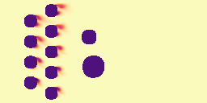
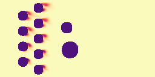

Paper: arXiv
TLDR
In our paper "Towards a Physics Foundation Model", we introduce a transformer-based model designed to learn multiple physical systems. Our goal is to create a unified framework — a Physics Foundation Model — that can understand and predict physical phenomena across multiple scales and domains. Importantly, such a foundation model must be capable of generalizing to new physical systems and conditions not seen during training. We compare our model's performance against traditional physics-surrogate models and demonstrate its ability to generalize to unseen scenarios.
A Foundation Model for Physics — Why?
"A Foundation Model exhibits wide generalization capability – without retraining"
Large Language Models (LLMs), especially their newest version of Reasoning Models, are extremely versatile. They can write poems, give summaries, translate, code and solve math problems. This is not only due to their vast training data, but also their ability of in-context and zero-shot learning; they can adapt to new tasks without any additional training, simply by following their instructions. Think for example of this prompt:
Take this paper and
- Translate it to German.
- Remove all em-dashes.
- Paraphrase the last section.
- Check all math formulas.
Return Latex code!
This particular task (the paper and my instructions) is something the model has never seen before, yet it can solve it fantastically well.
We want something similar for physics! We want a model that learned all possible physical principles and can apply them to new scenarios, without any retraining. Importantly, we are talking about a replacement of traditional physics-simulators, not LLMs. These models would not output physical equations (text), but physical fields (numerical data), for example the velocity field of a fluid flow. Current physics-aware machine learning (PAML) models are typically narrow models, and for good reason, or actually two reasons:
- Data is scarce, since simulations and experiments are expensive as hell. Espcially 3D simulations take weeks to months on a supercomputer. Also, the physical world is extremely diverse, and it is almost impossible to cover all scenarios.
- Predicting physics is extremely hard, even for numerical solvers. Physics simulations are done time-step by time-step, and small errors accumulate quickly. Machine learning models typically struggle with these errors when predicting long-horizon phenomena.
The General Physics Transformer (GPhyT)
The General Physics Transformer is our first step towards a Physics Foundation Model. Its abbreviation GPhyT obviously refers to GPT, the Generative Pre-trained Transformer, by OpenAI. We think of GPhyT as the version 0.1 and hopefully by the time we reach version 3.5 or 4, we will have a true Physics Foundation Model, equally successful as its NLP counterpart.
GPhyT is a transformer-based model designed to learn universal physical principles from a sequence of time steps, a "physics prompt". This prompt allows the model to understand the current state of a physical system without additional input. Which boundary conditions, which spatial dimensions and which physics are present, is all encoded in the prompt. The model then predicts the next time step, and can be applied autoregressively to predict long-term dynamics.
The specific architecture is shown below. The model encodes multiple physical fields (e.g. velocity, pressure, temperature) at multiple time steps using a linear encoder (tokenizer) into spatiotemporal patches. Additionally, we compute the spatial and temporal derivatives of these fields using finite differences. This helps the model to better identify the underlying physics. The encoded space-time patches are then processed by a standard transformer architecture. Importantly, the transformer computes the partial derivatives wrt. time ($\frac{\partial X}{\partial t}$), which are then integrated using a numerical integrator. The ML community already knows that predicting differences rather than absolute values is much easier for neural networks (resnets, skip connections, ...), so this is not really surpising. Here, we take this idea to the next level by predicting physical time derivatives.
Our Results
We first evaluated GPhyT on the known physical systems it was trained on and compared against strong baselines. GPhyT outperforms all baselines on all systems, often by a large margin. Below are some example predictions of GPhyT (bottom row) against the ground truth (top row). You almost cannot tell the difference and for the periodic systems like shear flow (left) and euler equations (center-right), the boundaries are almost invisible.

However, the main point of a Physics Foundation Model is to generalize to new physics. Below, we show some examples of GPhyT predicting completely unseen physical systems (bottom row) against the ground truth (top row). Left and center-left are examples of novel boundary conditions, while center-right and right are examples of completely new physics. Hopefully, you agree that the new boundary conditions are no challenge for the model. The new physics examples are not perfect, as you can see some artifacts, but still very impressive for a model that has never seen anything like this before.


Our final experiment are long-horizon predictions, i.e. autoregressive rollouts of the model. This task is incredibly difficult and not current Physics Foundation Model can achieve high enough accuracy to actually replace a numerical solver.
What's next?
Our roadmap includes: